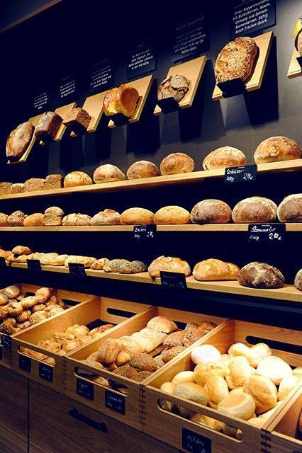

Desde 1998, la Asociación de Cooperativas Honorato lleva inauguradas 10 panaderías a partir del impulso de un grupo de trabajadores de Formosa Capital, inspirado en una experiencia cooperativa iniciada en 1980 en Bs.As . Los unió la idea de replicar un modelo de negocio basado en la democracia laboral y las fortalezas del sistema de autogestión.
Además de ofrecer un salario digno a sus miembros, el sistema contempla la creación de un fondo que permite financiar nuevas panaderías cooperativas y capacitar a sus miembros. HTDF presenta un documento que detalla las recomendaciones de los trabajadores de Honorato para replicar esta interesante experiencia.
En la ciudad de Florencio Varela en Buenos Aires, enmarcada por la postal de Las grandes panaderías,En la década de 1980, esa zona fue también el laboratorio de ensayo de un movimiento cooperativista que cobró impulso bajo la premisa de “democratizar los negocios” a partir de la propiedad colectiva.
La panadería “La Porteña” fue una de las pocas experiencias autogestivas de la ciudad que logró consolidarse y crecer. Con esa referencia, un grupo de cooperativistas emprendedores les propusieron en 1998 a los trabajadores de ese comercio que los ayuden a replicar ese modelo exitoso desarrollando nuevas panaderías bajo la supervisión de los veteranos asociados de La misma
La nueva asociación creada para ese fin tomó el nombre de Honorato, el Santo de los panaderos, un panadero local creó la primera panadería con la idea de que los trabajos deben ser propiedad de los trabajadores para lograr una sociedad justa y democrática.
En las dos décadas siguientes, la Asociación de Cooperativas Honorato creó otras nueve panaderías que siguieron el modelo de La Porteña. Los trabajadores-propietarios de esos locales tienen un salario básico asegurado de $200 por hora de trabajo. El excedente de la ganancia se destina a dos fines: una parte va a mejorar los ingresos de los asociados y otra sirve para crear un fondo común que maneja una Cooperativa de Desarrollo y Apoyo (DSC), encargada de la financiación y asesoramiento legal de los nuevos proyectos.
Los grupos de trabajadores interesados en abrir una nueva panadería reciben la capacitación, las recetas y el apoyo integral de los miembros de las cooperativas ya creadas, quienes participan activamente durante los seis primeros meses en el manejo de los locales nuevos. A su vez, los trabajadores-propietarios de la nueva panadería deben aportar con sus ganancias al fondo de la DSC para que se puedan generar nuevos emprendimientos.
“Aquí tenemos personas que acercan a la panadería su arte. Vienen con cosas innovadoras y las comparten, no es una carrera por alcanzar una cumbre. Esa forma de resolver los habituales conflictos laborales beneficia a los trabajadores, incluso influyen en cómo se comunican con sus hijos o con otras personas de su comunidad”, explica Jorge Lopez, uno de los fundadores de Honorato
La asociación mantiene un debate permanente sobre las formas de mejorar y ampliar los negocios. Hasta ahora uno de los puntos fuertes fue concentrar el esfuerzo en un único rubro laboral que conocen y han probado con éxito, pero ya se plantean que la región sólo admite un número limitado de panaderías y deberían empezar a desarrollar cooperativas que atiendan otras actividades.
Mientras tanto, llevan dos décadas de experiencia en las que pudieron demostrar que los trabajadores están en condiciones de gestionar y crear modelos laborales alternativos basados en la democracia en los lugares de trabajo, fuera de la idea tradicional de que es condición necesaria la presencia de un empresario-patrón